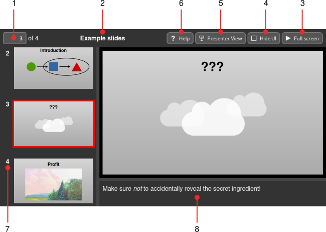
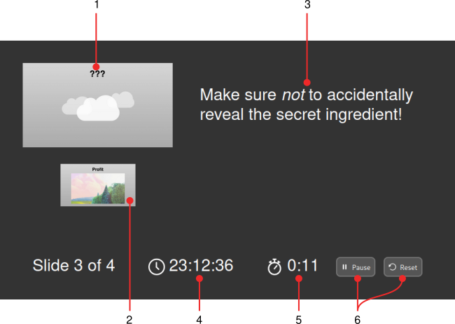

The Slidie XHTML Viewer¶
The slidie XHTML viewer application is embedded into the XHTML output format files. The viewer provides a simple read-only view of a set of slides, along with a few presenter-oriented utilities.
User interface¶
The user interface should be fairly familliar consisting of the following major parts:
The current slide and step numbers. These are displayed (and can be entered) using the same syntax used for hyperlinks. The current position in the presentation is also reflected in the browser URL bar.
The presentation title. This is taken from the first slide’s metadata.
Fullscreen button. This will enter full-screen mode, hiding everything but the slides. Press escape to exit.
Hide UI button. This hides all of the viewer application’s user interface but does not enter full screen mode. This may be useful when presenting via a video conferencing system. Press escape to restore the user interface.
Presenter view button. Open presenter view in a new window.
Help button. Enumerates all keyboard shortcuts supported by the viewer.
Slide thumbnail browser. Tip: Hover over the slide number to show the source file name of a slide.
Speaker notes. Rendered as Markdown. Speaker notes not related to the current build step are shown dimly.
To advance through the show, either click (within the slide area) or use the arrow keys. Other keyboard shortcuts are provided to skip more rapidly (e.g. past build steps or to the beginning and end). See the built-in help menu for the complete list.
Presenter view¶
Slidie’s presenter view may be used in multi-display environments to provide extra prompts to a presenter as they run through their slides. The presenter view has the following major components:
Current slide.
Next slide.
Speaker notes.
Current time.
Stopwatch.
Stopwatch controls.
Tip
The presenter view stopwatch is started automatically when the presentation is placed in full-screen mode.
Warning
The slide previews unfortunately do not show a live view of any dynamic slide elements (e.g. ;ref:videos <video> or IFrames).
Browser quirks¶
The XHTML viewer application supports all major browser engines and browsers. There are, however, a some known limitations in certain browsers:
- Webkit (e.g. Safari)
Videos and IFrames are not supported at the time of writing due to a rendering bug in this browser engine. These elements will currently render in a glitchy and unusable fashion.
- Firefox
Firefox’s security rules prevent keyboard and mouse input from reaching IFrames under certain circumstances when the viewer is opened directly from a file. Accessing the slides via a web server (e.g.
python -m http.server) is a possible workaround.